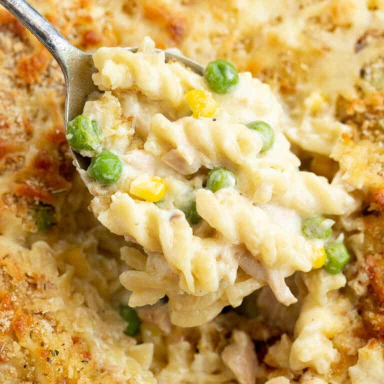

Tuna Mornay

Ingredients
- 200g of canned tuna - in brine or water
- 65g butter
- 1/4 cup plain flour
- 1 cup milk
- 1 carrot, peeled, finely chopped
- frozen corn
- frozen peas
- onion powder
- garlic powder
- 1 cup Parmesan cheese
- salt
- pepper
- pasta
Method
- Put a small (vegetables) and a medium (pasta) saucepan to boil.
- Open and drain tune.
- Grate cheese.
- Heat butter over low in a medium saucepan. Once melted, add flour and mix.
- Add half the milk and stir until combined and smooth. Add the rest of the milk.
- Add vegetables and pasta to boiling water.
- Add garlic powder, onion powder, cheese, vegetables and tuna to butter and flour and mix.
- Season with salt and pepper as desired.